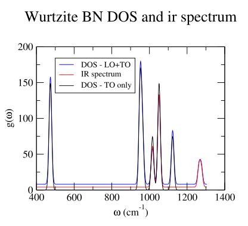
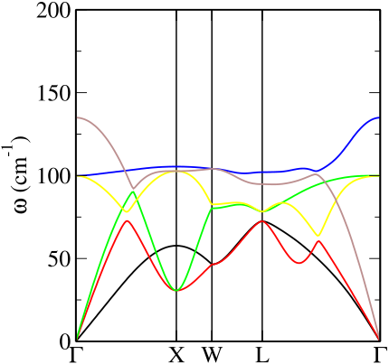
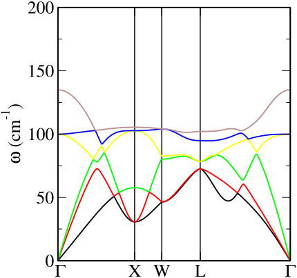

Plotting-and-analysis-tools
Several tools and programs are available to help automate post-processing analysis and plotting of the results of phonon calculations. The tools described below are supplied as part of the CASTEP source code distribution Other independently-developed spectroscopy modelling tools may be installed to perform more advanced modelling of, for example inelastic neutron and IR spectra.
Two programs dispersion.pl and dos.pl are supplied as part of the
CASTEP source distribution to analyse and plot the results. Both of them
read the phonon information from the .castep or .phonon files and
can generate plots of phonon dispersion curves across the Brillouin
Zone, and of phonon densities of states respectively 1. These
programs are written in the PERL language which is almost universally
available on modern operating systems. Generation of the plots is
handled by either of the
xmgrace or
gnuplot graphics programs (the perl programs
generate an xmgrace script and invoke it automatically). 2
dos.pl
The dos.pl program can read any of a .castep, a .phonon, or a
.phonon_dos file and generate a phonon density of states plot.
Arguments are given in “unix style” following a minus sign (dash). The
command
dos.pl -xg -w 10 <seedname>.phonon
will generate a phonon density of states using a Gaussian broadening
with a FWHM of 10 cm^{-1}, and invoke xmgrace to generate the plot.
If a .phonon file is specified the DOS is constructed as a weighted
average over all q-points present in the file. Alternatively an
adaptively-weighted dos computed by CASTEP is read from a .phonon_dos
file if given as command-line argument.
The options -np, -ps, -eps change the default output and write an
xmgrace file, a PostScript or Encapsulated PostScript file respectively.
These files are written to standard output so use a shell redirect (>)
to name your plot file. The option -ir option weights the computed DOS
by the computed infra-red intensity in the .castep or .phonon file.
This simple algorithm is not a fully realistic model of an infrared
powder spectrum, and should be regarded as a simple approximation only.
3 Likewise the -raman option extracts Raman intensities and
computes the weighted spectrum. The computed spectrum does include the
frequency-dependent and Stokes thermal factors, and is therefore a more
realistic model spectrum than in the infrared case. The -lorentz
option switches from Gaussian to a Lorentzian broadening and the
-temp T option sets the temperature for the Stokes thermal population
term in Kelvin.
Figure [bn-dos-ir] shows an example derived from
the output produced by using dos.pl on the example run of
figure [example-gamma-out].
- 
-
Figure 8 Example output from dos.pl based on the run of figure [example-gamma-out]. Infrared spectrum and DOS curves based on just the TO modes or TO plus LO have been combined into into one plot with a slightly shifted baseline, scaled, and legends added.
dispersion.pl
The dispersion.pl program can read either a .castep or a .phonon
file and generate a dispersion curve plot using xmgrace. Unlike the
behaviour of dos.pl there is an important difference between the
behaviour when reading these two different output files concerning the
detection of branch crossings. A high-quality dispersion plot requires
that phonon branches are drawn as continuous lines even when two
branches cross in between the computed wavevectors. Dispersion.pl
contains an algorithm based on matching of eigenvectors at adjacent
points to determine branch connectivity. Only the .phonon file
contains eigenvector information, so only in this case is crossing
detection enabled. The algorithm can be time consuming and take several
minutes to complete in large cases, so patience is sometimes required.
The -nj option (“no-join”) disables the crossing detection even when
the input file is a .phonon one.
The options -np, -ps, -eps behave exactly as for dos.pl. One
useful output option is -symmetry <symm> which attempts to label the
high symmetry points using the conventional Brillouin zone notation of
Bradley and Cracknell. The symmetry keywords cubic, fcc, bcc,
tetragonal, tetragonal, tetragonal-I, orthorhombic, hexagonal,
trigonal, trigonal-h (and minor variants) are understood.
Figure [rbbr-dispersion] demonstrates the effect of the flags and the branch joining algorithm. The plots were produced from a Fourier interpolation calculation of fcc RbBr using the commands
dispersion.pl -xg -symmetry fcc RbBr.phonon
and
dispersion.pl -xg -symmetry fcc -nj RbBr.phonon
respectively.
|  |  |
- Figure 9 Phonon dispersion curve plots of RbBr generated using the
dispersion.plscript and xmgrace. The Brillouin zone labelling is generated using the-symmetry fccoption. The left-hand plot was generated using the default branch crossing detection algorithm, which was disabled using the-njoption for the right-hand plot. The algorithm has discriminated between modes which do cross and the four genuine avoided crossings in the left-hand plot.
mode_follow
mode_follow is one of the Fortran tools suite in the CASTEP source,
which is compiled using the command make tools. As the name implies
its function is to generate new “frozen phonon” configurations based on
perturbation by a mode generated from a previous phonon calculation,
which it outputs by writing one or more new .cell files. In fact it
has two modes of operation.
-
To generate a sequence of
.cellfiles perturbed by the a frozen phonon at a range of amplitudes, which may be used to explore the energy profile along the mode it is invoked asmode follow -modemode_num-nampnum_amplitudes-ampmax_amplitude-qpointqx qy qz <seedname>|<seedname>.phononwhich reads the
.phononand corresponding.cellfiles and generates a sequence of N+1 files seedname-i.cellcontaining structures perturbed by the selected eigenvector scaled by a non-dimensional amplitude factor f=A i/N, i=0 .. N. The arguments are- mode_num
-
is the integer index number selecting which mode to use (default 1)
- qx qy qz
-
is the q-point to extract from the
.phononfile (default (0,0,0)) - max_amplitude
-
is A the non-dimensional scale of the eigenvectors used to create the (largest) displacement
- num_amplitudes
-
is N, one less than the number of configurations to generate (default 2).
- seedname
-
is the seed name of a previous, successful phonon run.
The file seedname
.phononmust exist and be readable. Ifmode_followis invoked without the.phononextension, it will also attempt to read seedname.cellfile if it exists and will copy most other cell parameters and settings to its output.cellfiles.As an alternative to specifying the arguments on the command line
mode_followwill also attempt to read them from a file named seedname.mode-paramif it exists. This file should contain a Fortran namelist namedfreeze, whose entries are the identical to the command-line argument names. For exampleTo produce a frozen phonon configuration for a nonzero {\mathbf{q}}-vector it is also necessary to generate a supercell which is commensurate with a frozen phonon at wavevector {\mathbf{q}}. This supercell may be specified in the
.cellfile using the usualphonon_supercell_matrixblock, or by the entrySUPERCELLin namelistfreezein the.mode-paramfile. (There is no corresponding command line argument). For example a.mode-paramfile requesting a zone-boundary phonon might contain -
Mode_follow’s second mode of operation is to generate output files with the structure perturbed by a frozen phonon at the same amplitude but a progressive sequence of phases, which could be used for an animation of the mode. In that case thenum_amplitudesargument should be omitted, and the alternativenframesargument given instead (either on the command line or in the.mode-paramfile). This will generate a sequence of N frames with phases separated by 2 \pi/N. Otherwise the arguments and behaviour are identical.One of the scripts in the
cteproutspackage, e.g.cell2xtl,cell2pdb,cell2xyzmay be then be used to convert the.cellfiles to a form suitable for visualisation.
phonons
The program phonons, one of the CASTEP tools suite is a general
purpose phonon post-processing tool. It can read all of the dynamical
matrix or force constant matrix data from a .check or .castep_bin
file generated in any phonon calculation and re-generate the final
phonon output with changes to one or several “finalisation” options,
without needing to repeat the expensive “electronic” DFPT or supercell
parts of a lattice dynamics calculation. For example, an acoustic
sum-rule correction may be applied to a calculation where this was not
chosen initially.
phonons is invoked exactly as is CASTEP and reads a .cell and a
.param file exactly as CASTEP does. These may be identical to or near
copies of the original calculation, but the .param file must contain
the continuation keyword which must point to the .check or
.castep_bin file which contains the dynamical matrix data. If the run
is successful it will write a log file with the extension .phonon_out
and a new .phonon file. In this respect a run of phonons on a
continuation deck is very similar to re-running castep on the same
deck. However it will not attempt to perform any “electronic”
calculation and will ignore any attempt to try. For example, if the
parameter elec_energy_tol was changed castep would discard the saved
dynamical matrix data and restart from the beginning. phonons will
ignore this and process the saved data as a continuation run.
This post-processing can be used for a number of tasks, including
-
Turning on or off or modifying an acoustic sum-rule correction by changing the parameters keywords
phonon_sum_ruleorphonon_sum_rule_method. -
turning on or off the inclusion of LO/TO splitting terms by changing parameters keyword
phonon_calc_lo_to_splittingor changing the set of directions for {\mathbf{q}}\rightarrow 0 by adding or changing cell%block PHONON_GAMMA_DIRECTIONS. -
adding or omitting the low-frequency ionic term in an E-field calculation by changing parameter
efield_calc_ion_permittivity. Note that an attempt to turn this on will only succeed if there result of a \Gamma-point phonon calculation is already stored in the.checkfile.phononswill not attempt the electronic calculation necessary to compute this if it is not. -
changing the set of fine phonon k-points used as the target of a supercell or interpolation calculation by adding or changing
%block PHONON_FINE_KPOINT_LIST,%block PHONON_FINE_KPOINT_PATH,phonon_fine_kpoint_mp_gridor similar in the.cellfile. This permits the calculation of both a set of dispersion curves and a DOS from the same electronic run (DFPT/Interpolation or supercell). -
taking the result of a phonon calculation on a Monkhorst Pack grid of standard (not fine) phonon kpoints and performing Fourier interpolation as a post-processing step.
-
switching interpolation methods between spherical and anisotropic schemes.
All of the above could also be performed using castep rather than
phonons provided care is taken not to change any parameters which
control the properties of the “electronic” part of the calculation.
However phonons can also perform some additional processing which
castep can not, most notably isotopically substituted lattice dynamics
calculations.
-
dispersion.planddos.plare also able perform very similar analysis and plotting of electronic eigenvalues from.castepor.bandsfiles and generate band structure and electronic DOS plots. ↩ -
On linux systems xmgrace can usually be found as a contributed package and installed using the system package manager. Xmgrace is also available for Microsoft Windows systems as part of the “cygwin” suite of programs (http://www.cygwin.com) along with shells, the PERL interpreter and an X-windows server (Xmgrace is an X-windows program and requires a running X server to display). ↩
-
A more sophisticated model of infra-red spectra was introduced by Balan and Mauri ((Balan et al. 2001; Kendrick and Burnett 2016) and subsequent works). Modelling of inelastic neutron spectra is discussed by Fair (Fair et al. 2022), Ramirez-Cuesta (Ramirez-Cuesta 2004; Cheng and Ramirez-Cuesta 2020) ↩